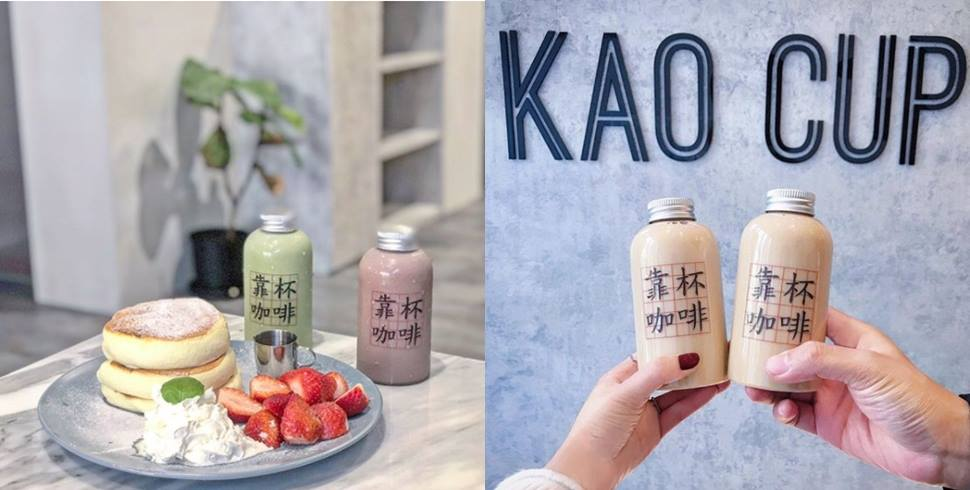
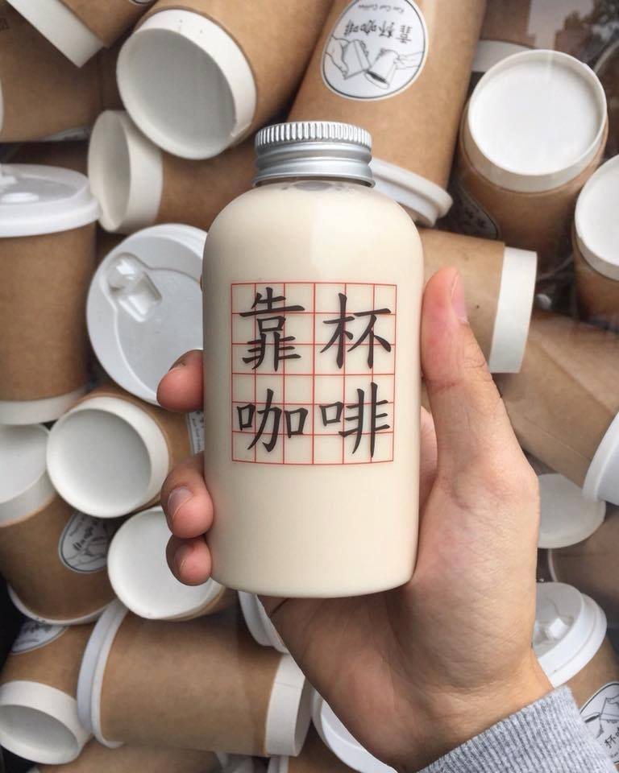
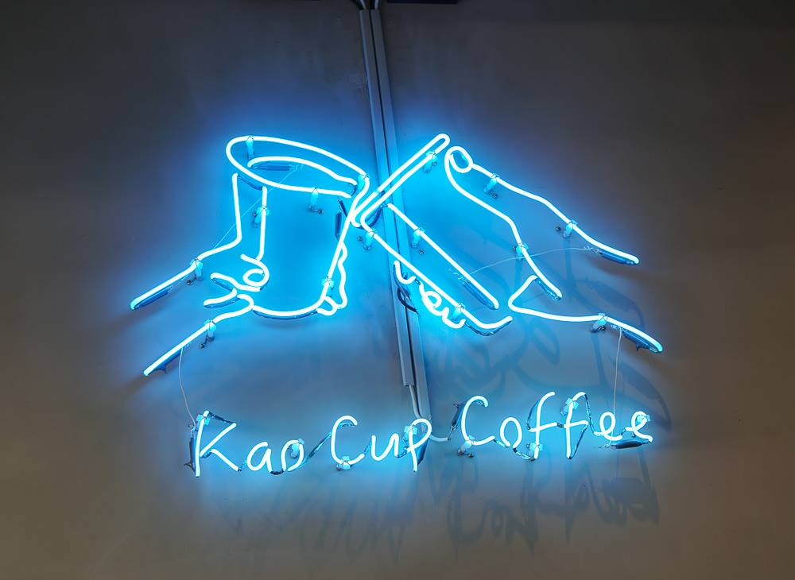

高雄美術館instagram打卡餐廳
靠杯咖啡
Trattoria Venti
碳佐麻里
蘿芙甜點
學習心得

靠杯咖啡 KAO CUP Coffee
地址：804高雄市鼓山區青海路187號（google地圖）
電話：07 522 6987
營業時間：周一至周四9:00 – 20:00 / 週五至週日9:00 – 22:00


靠杯咖啡 KAO CUP Coffee位於高雄青海路美食街上，
WOO Taiwan 泰式料理的斜對面，雖然店面不大，但是裡面藏著限量的草莓舒芙蕾鬆餅唷！
他們的咖啡幾乎是杯裝，而且都有靠杯LOGO，有梗之外也非常有趣，非常有品牌特色的一間店。
靠杯咖啡很特別的地方是，營業時間早上9點開始，不像一般咖啡廳都要10點以上才營業，
想吃早餐可以選擇靠杯咖啡唷~讓自己的早晨有個美好的開始~
Trattoria